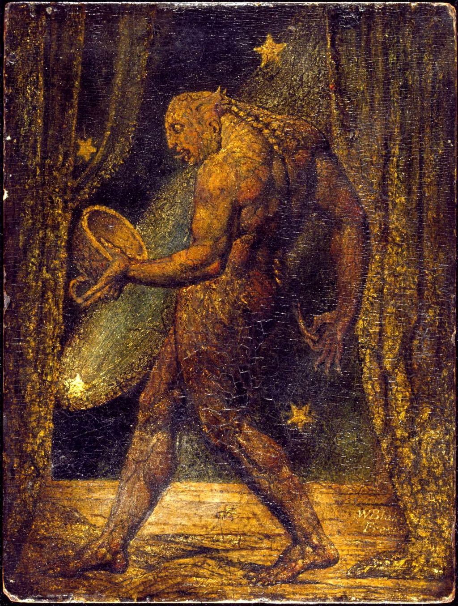

I am a Computer Science graduate specializing in Mobile and Web Technologies. I also graduated from a tourism-focused technical secondary school. As my engineering thesis project, I developed a horror game titled Last Travel Agency.
I am passionate about exploring worlds created in games such as The Witcher 3 (especially Toussaint from the Blood and Wine expansion), Outriders (particularly its icy caves), and Layers of Fear (especially its constantly shifting corridors).
My goal is to become a Level Designer and create immersive worlds of my own.